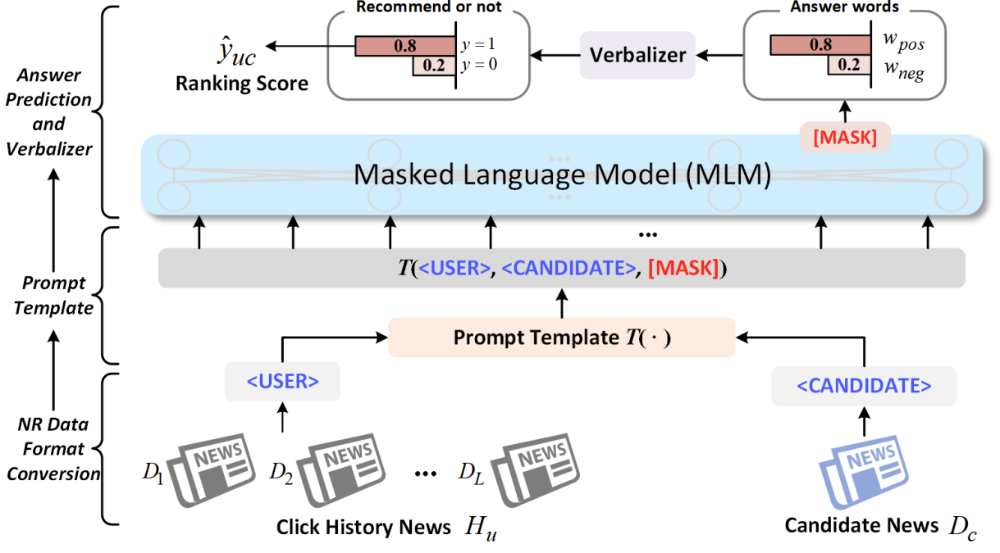
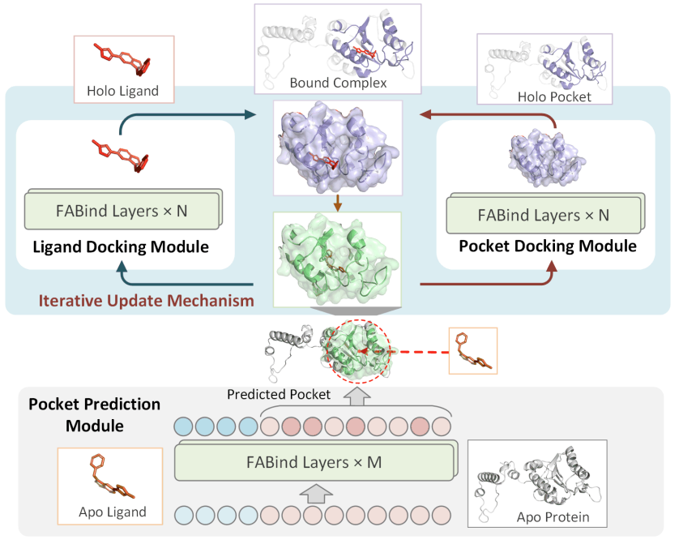
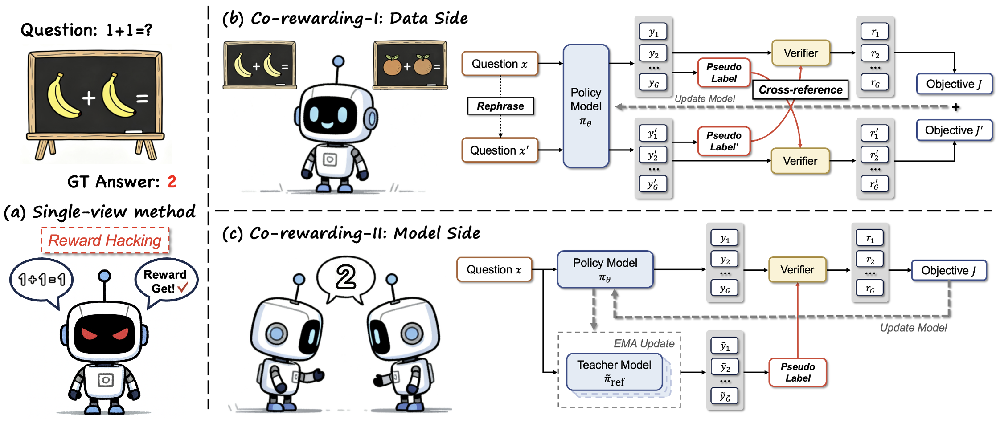
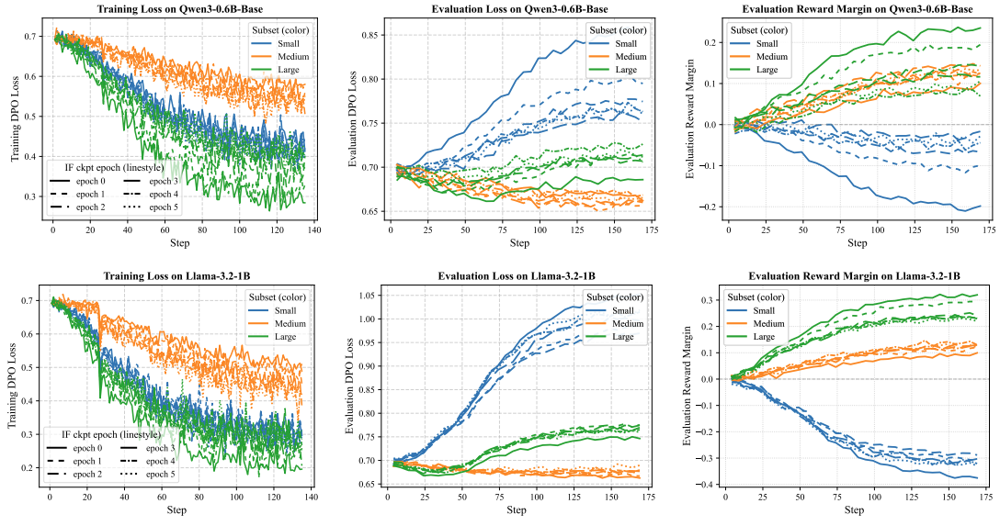

Zizhuo ZhangPh.D. @ TMLR Group, HKBU
Trustworthy Machine Learning and Reasoning (TMLR) Group,
[Google Scholar]
[Github]
[Xiaohongshu]
[LinkedIn] |
|
I am a Ph.D. student at Trustworthy Machine Learning and Reasoning (TMLR) group in the Department of Computer Science, Hong Kong Baptist University (HKBU), advised by Prof. Bo Han and Prof. Jiangchao Yao. Recently, my research focuses on Large Language Model (LLM) Post-training, including reinforcement learning (RL), LLM preference alignment, and LLM unlearning. Previously, I also gained research experience in Recommender System and AI4Science, including news recommendation and molecular docking. I received my MPhil Eng. degree and Bachelor Eng. degree from Huazhong University of Science and Technology (HUST), advised by Prof. Bang Wang. I am always open to discussions and possible collaborations. Please feel free to email me if you would like to chat.
(* indicates equal contribution. Full list can be found on my Google Scholar .)




Ph.D. Student, 2024.09 - Present TMLR Group, Department of Computer Science, Faculty of Science Hong Kong Baptist University (HKBU), Hong Kong SAR
MPhil Degree, 2019.09 - 2023.12 Information and Communication Engineering, School of Electronic Information and Communications Huazhong University of Science and Technology (HUST), Wuhan, China
B.Eng. Degree, 2015.09 - 2019.06 Electronic Information Engineering, School of Electronic Information and Communications Huazhong University of Science and Technology (HUST), Wuhan, China
HKBU Institute for Research, 2024.05 - 2024.08 Full-time research assistant, working with Dr. Qizhou Wang and Dr. Jianing Zhu, for research about large language model alignment.
Microsoft Research Asia, 2024.02 - 2024.05 Full-time internship as research internin Microsoft Research AI4Science, working with Dr. Lijun Wu on molecular docking.
Huawei Technologies Co Ltd, 2018.07 - 2018.09 Full-time internship as software engineer intern in Huawei IaaS Service Product Department at CloudBU.
COMP7250(PG): Machine Learning, Spring (2026), HKBU.
COMP4096(UG): Business Intelligence and Decision Support, Autumn (2025), HKBU.
COMP4145(UG): Business Intelligence, Decision Support and Project Development, Autumn (2025), HKBU.
COMP7810(PG): Business Intelligence, Spring (2025), HKBU.